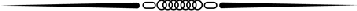

キネマ旬報ホームページ＜エッセンシャル＞
 |
||
| 最新号紹介 5月6日発売 |
1997年度キネマ旬報 ベスト１０ |
「キネマ旬報」って何？ |
|---|

今日は誰の誕生日？ （5月7日） | ||
|
■Netscape 2.0以上のブラウザでご覧になることを推奨いたします。
禁無断転載
| キネ旬ギャラリー 「Ｄ坂の殺人事件」ポストカード |
[イベント][受賞][訃報] |
early通信
(4/27更新)
最新情報： 長崎キネ旬友の会 キネマ旬報'98年５月上旬号
松田優作クロニクル |
|
|
||
| 最新号紹介 5月6日発売 |
1997年度キネマ旬報 ベスト１０ |
「キネマ旬報」って何？ |
|---|
今日は誰の誕生日？ （5月7日） | ||
|
| キネ旬ギャラリー 「Ｄ坂の殺人事件」ポストカード |
[イベント][受賞][訃報] |
最新情報： 長崎キネ旬友の会 キネマ旬報'98年５月上旬号
松田優作クロニクル |
バックナンバー('97-'98)
在庫リスト
映画関連のリンク集
キネマ旬報社の本
| |
このページの感想、キネマ旬報へのお問い合わせは・・・キネマ旬報(kinejun@netlaputa.or.jp)へ！
|